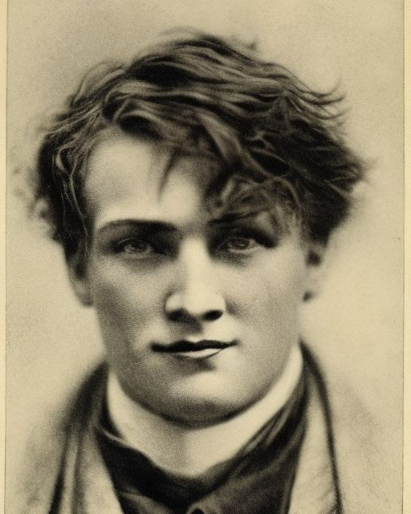

Matthew Bridges
Young relic-hunting celebrity, psychic clue engine, and the party's most dangerous interpreter of buried history.
8/14
14
18
10/8
5
6.00

Powers
- Psychometry 22: Matthew can read the past from objects and places, turning relics, ruins, and crime scenes into active witnesses.
- Deep-Time Reach: His psychometry is powerful enough to push far beyond ordinary historical memory, sometimes into prehistoric periods.
- Extra Effort Option: He can force the power harder for even greater reach at serious fatigue and control cost.
FRH Package
- Patron (Followers of the Right Hand) (15 or less) [60]: Equipment: Standard, +5; Special Qualities (Access to Magic in Non-magical World): Very Unusual, +10; Secret: -5; Subtraction (Minimal Intervention): -5.
- Duty (15 or less) [-25]: Involuntary: -5; Subtraction (Extremely Hazardous): -5.
- Enemy (Unknown Enemies of FRH) [-60]: Unknown: -5; Subtraction (Access to Magic in Non-magical World): -15.
Required Secret Power
Psychometry 22 [22]: Matthew can see back 10,648 years (8,725 BCE) within a physical range of 484 inches (39 ft, about 13m) in a circle, and with extra effort can reach 17,576 years (15,653 BCE / 17,000 Before Present) within 676 inches (56 ft, about 18m). In practical terms, he can turn an object or place into a witness, sometimes reaching deep enough to expose prehistoric human activity, lost violence, migration, burial, and hidden caches.
Important note: Matthew appears to be missing the explicit sheet entry Secret (Secret Psi) [-20], which should accompany the power as part of the character's required secret structure.
Required Secret Society
Ally Group (Mental Alienist) (Small, 15 or less) [60]: Point Level: 100, +10.
Secret (Member of Mental Alienists) [-5]: his connection to that society is concealed and should be treated as its own required secret lane. FRH does not count toward this requirement.
How Matthew Uses His Power
- He touches objects, ruins, vehicles, luggage, heirlooms, and murder evidence to recover scenes no ordinary investigator could witness.
- He converts static clues into narrative events, which lets the party move from speculation to concrete historical pressure.
- He is strongest when the case contains artifacts, hidden caches, old violence, inherited objects, or places layered with time.
- He is not just a supernatural trick. He is a campaign engine for archaeology, old money, family scandal, expedition logic, and crimes that refuse to stay buried.
Advantages
Ally Group (Mental Alienist) (Small, 15 or less) [60] (Point Level: 100, +10); Combat Reflexes [15] (Fright Check: 20); Eidetic Memory 2 [60]; Filthy Rich [50] (Starting Wealth: $75,000); Lang: Ancient Hebrews (Native Spoken/Native Written) [6]; Lang: English (Native) [0]; Lang: Spanish (Native Spoken/Native Written) [6]; Patron (Followers of the Right Hand) (15 or less) [60] (Equipment: Standard, +5; Special Qualities (Access to Magic in Non-magical World): Very Unusual, +10; Secret: -5; Subtraction (Minimal Intervention): -5); Status 2 (Nationally Known Rare Antique Dealer) [5].
Disadvantages
Duty (15 or less) [-25] (Involuntary: -5; Subtraction (Extremely Hazardous): -5); Enemy (Unknown Enemies of FRH) [-60] (Unknown: -5; Subtraction (Access to Magic in Non-magical World): -15); Outsider (Atheist) [-5] (Reaction: -3/+3); Secret (ESPer / grand-nephew of Grand Wizard Nathan Bedford Forrest) [-30]; Secret (Member of Mental Alienists) [-5].
Quirks
Always carries an umbrella; Impatient; Chess player; Nome De Plume (Real name is NOT Matthew Bridges); Nosy; Wears glasses to look smart.
Investigative Role
- Clue engine
- Relic interpreter
- Historical witness extractor
- Money-backed expedition enabler
Why He Works For New Players
Matthew was designed to be legible and exciting: essentially a young celebrity archaeologist with one impossible gift. He teaches the FRH idea that investigation can be supernatural without turning into generic fantasy spellcasting.
Skills
Accounting-17 [1/2]; Acting-19 [1]; Administration-18 [1/2]; Animal Handling-18 [1]; Anthropology-18 [1]; Archaeology-20 [2]; Area Knowledge (USA)-19 [1/2]; Boating-13 [1]; Brawling-14 [1]; Buckler-14 [1]; Camouflage-19 [1/2]; Chemistry/TL6-18 [1]; Chess-19 [1/2]; Climbing-13 [1]; Cloak-13 [1]; Demolition/TL6-18 [1/2]; Detect Lies-18 [1]; Driving/TL6 (Automobile)-14 [2]; Driving/TL6 (Locomotive)-12 [1/2]; Fast-Draw (Knife)-14 [1/2]; Fast-Draw (Saber)-14 [1/2]; Fast-Talk-19 [1]; Fencing-14 [2]; First Aid/TL6-19 [1/2]; Gambling-18 [1/2]; Guns/TL6 (Pistol)-17 [2]; Guns/TL6 (Rifle)-16 [1]; Guns/TL6 (Shotgun)-15 [1/2]; Knife-13 [1/2]; Knife Throwing-13 [1/2]; Lasso (Riata)-13 [1]; Lip Reading-18 [1/2]; Lockpicking/TL6-18 [1/2]; Main-Gauche-13 [1]; Mechanic/TL6 (Gasoline Engine)-18 [1/2]; Mechanic/TL6 (Simple Machines)-18 [1/2]; Mechanic/TL6 (Steam Engine)-18 [1/2]; Merchant-18 [1/2]; Motorcycle/TL6-13 [1/2]; Navigation/TL6-20 [2]; Piloting/TL6 (Single-Engine Prop)-14 [2]; Psychometry-21 [10]; Research-21 [2]; Riding (Horse)-13 [1]; Speed-Reading-18 [1/2]; Stealth-14 [2]; Swimming-14 [1]; Tracking-19 [1]; Traps/TL6-18 [1/2]; Veterinary/TL6-17 [1/2].
Character Overview
Matthew Bridges became famous before he became safe. At sixteen he discovered he could see too far into the past, and what he saw was bad enough that he ran. Chattanooga, his parents, and the religious world that had formed him all became intolerable once power and unbelief had arrived in the same body. He left home convinced that if his family fully understood both his gift and his atheism, they might kill him for one or both. Los Angeles did not solve that fear so much as relocate it, but it gave him enough distance to become someone else before the old life could drag him back.
That new someone was built with help. An alienist listened to him, believed enough of what he said to be dangerous, and pointed him toward the Mental Alienists, the strange institutional refuge that teaches people with special abilities how to survive, work, and live among the ordinary human world. Through them Matthew learned how to make his gift useful instead of merely terrifying. He studied archaeology, cultivated his eye for objects and buried histories, and discovered that psychic intrusion into the past could be turned into a profession if one were shameless, talented, and lucky enough. By his mid-twenties he was already nearly a millionaire, a nationally known artifact-finding wunderkind who could stroll through a field, a ruin, or a park and emerge with the sort of historical object men with old money spend years pretending to deserve.
The polished public version of Matthew Bridges is brilliant, famous, rich, and irritating. That last part matters. He is nosy, creative, clever, and obnoxious in ways that make him feel alive rather than monumental. Underneath the new name sits a hidden one, and under that hidden name sits a bloodline ugly enough to make reinvention feel less like vanity than necessity. His history with Nathan Bedford Forrest through family memory is not something he advertises, and the split between what the public knows and what Matthew knows about himself remains one of the deepest pressures in the character.
For a new player, Matthew should feel like a young celebrity whose power made him wealthy and useful before it ever made him peaceful. He has already outrun one life, built another, and found a way to turn terror into prestige. The problem, as always, is that the past is still his business, and the more famous he becomes for excavating other people's buried histories, the harder it is to pretend his own can stay buried forever.